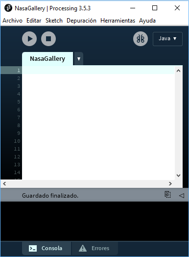
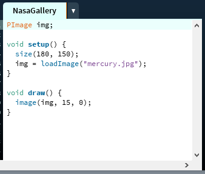

Processing és una aplicació de codi obert amb un llenguatge per a la programació d'imatges, animació, i so.
La seva sintaxi, està basada en Java però és més senzilla. És utilitzat per estudiants, artistes, dissenyadors, arquitectes, investigadors i aficionats.
En aquest CodeLab implementarem una aplicació, utilitzant Processing, per mostrar una galeria d'imatges.
Descarrega Processing de la seva web oficial:
Descomprimeix l'arxiu que has descarregat i executa
S'obrirà l'entorn de programació de Processing. Anomena i desa el projecte amb el nom

Necessitaràs aquestes imatges. Descarrega-les a la carpeta del projecte amb el nom indicat:
|
|
|
|
|
|


Un projecte Processing, té habitualment dos mètodes principals:
El bloc del mètode
El bloc del mètode
Comencem amb un petit codi:
PImage img; void setup() { size(180, 150); img = loadImage("mercury.jpg"); } void draw() { image(img, 15, 0); }

Al mètode
Al mètode
Si executes la aplicació veuràs això:

Avançar i retrocedir a la galeria
El següent pas serà afegir dos botons per a poder anar cap endavant i cap enrere en la llista d'imatges.
Primer haurem de carregar totes les imatges al mètode
Al mètode
Per útlim, afegirem un tercer mètode
El codi final quedarà així:
PImage img, mercury, venus, earth, mars, prev, next; void setup() { size(180, 150); mercury = loadImage("mercury.jpg"); venus = loadImage("venus.jpg"); earth = loadImage("earth.jpg"); mars = loadImage("mars.jpg"); prev = loadImage("prev.jpg"); next = loadImage("next.jpg"); img = mercury; } void draw() { image(prev, 0, 0); image(img, 15, 0); image(next, 165, 0); } void mousePressed(){ if(mouseX < 15){ if(img == mercury){ img = mars; } else if(img == venus){ img = mercury; } else if(img == earth){ img = venus; } else if(img == mars){ img = earth; } } else if(mouseX > 165){ if(img == mercury){ img = venus; } else if(img == venus){ img = earth; } else if(img == earth){ img = mars; } else if(img == mars){ img = mercury; } } }
Aquest és el resultat final: